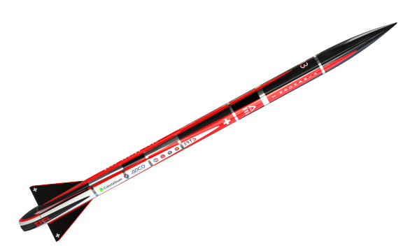
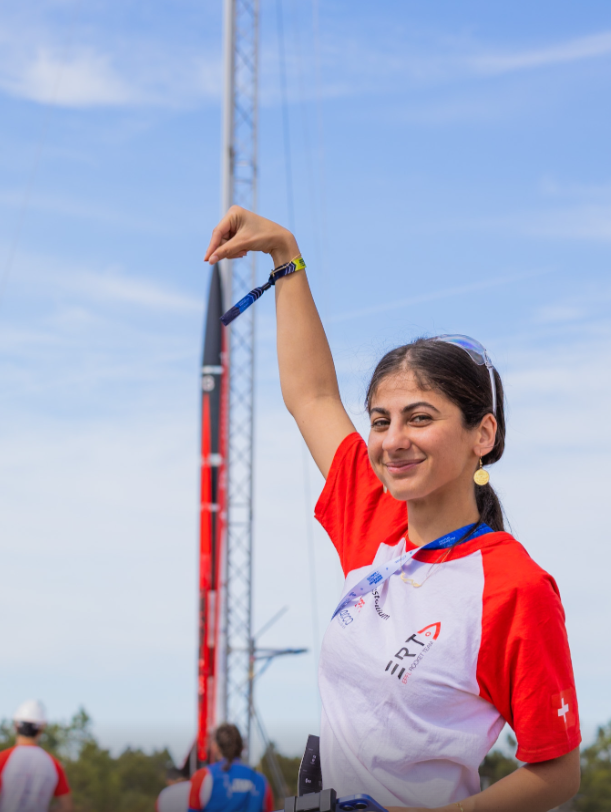
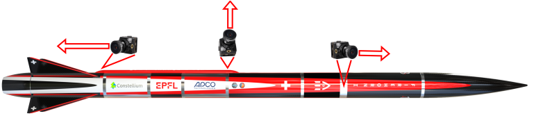
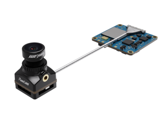
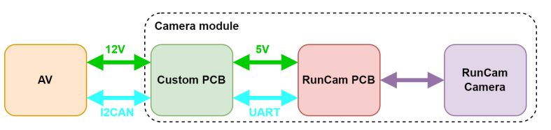
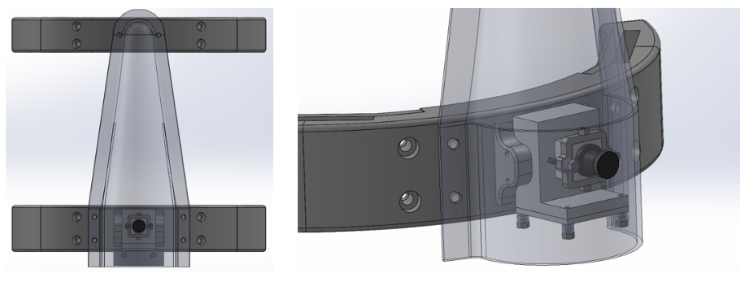
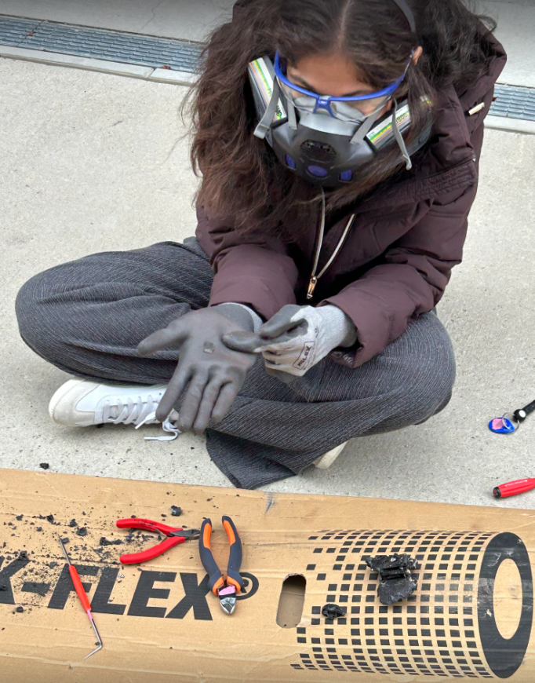
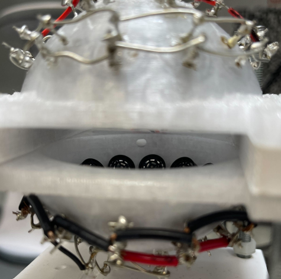
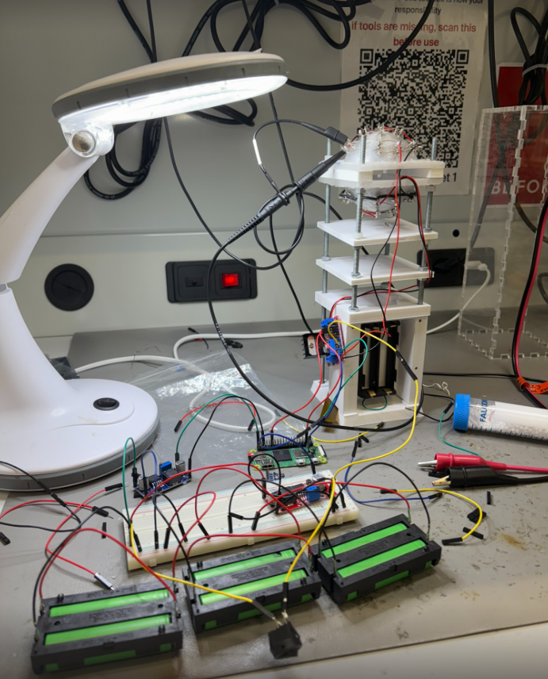
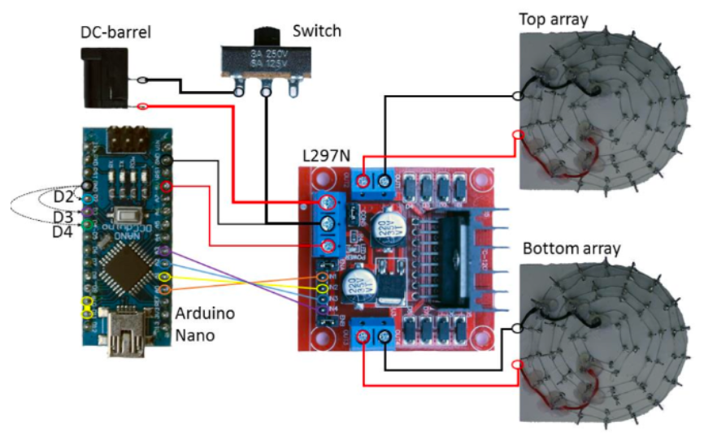

EPFL Rocket Team and Firehorn 1
The EPFL Rocket Team is a student association of approximately 240 members dedicated to reaching space before the end of the decade with a fully student-developed liquid launch vehicle. Founded in 2017, the team has won EuRoC 2021, placed third in 2022, and in 2023 launched Nordend, Switzerland's first liquid rocket to fly.
Firehorn 1 is the team's first EthaLOX (ethanol and liquid oxygen) single-stage launch vehicle, designed from the outset for a 30 km apogee. Its inaugural mission at EuRoC 2025 flew the 3 km qualification profile: 5 m tall, 83 kg dry mass, 7 kN thrust. It carries two payloads, both developed by the Payload Division: an acoustic levitation experiment in the nose cone, and a three-camera flight recording system distributed along the airframe.


As Payload Division Lead on Firehorn 1, I owned the complete 3-camera flight recording system from PCB design to mechanical mounts, and brought an acoustic levitation experiment from proof of concept to flight-ready hardware. Firehorn 1 flew at EuRoC 2025 as Switzerland's first cryogenic bi-liquid rocket.
Camera Placement and Requirements
Three cameras are distributed along the airframe to capture liftoff, the flight environment, and parachute deployment. Each position has its own thermal, vibration, and size constraints.
- Camera 1 (bottom aerocover, facing downward): liftoff monitoring, integrated into the aerocover structure, 125.5 g total
- Camera 2 (top aerocover, radial): flight environment, radial orientation, aluminium heat block and spring-loaded screws for vibration isolation, 221.66 g total
- Camera 3 (avionics bay): parachute deployment footage

Camera Selection and Communication
The RunCam Split 4 V2 was selected for its compact form factor (10.2 g), high resolution (2.7K at 60 fps, 140° field of view), and modular design: the lens and processing board are physically separated, allowing the lens to be positioned independently within tight aerocover geometry.
The RunCam communicates over UART, while the avionics use I2C converted to I2CAN for long cable runs through the airframe. Each camera module bridges the two: I2CAN in from the avionics, UART out to the camera, plus regulated power.


PCB Design
The camera PCB handles two core functions: I2CAN to UART protocol conversion, and a 24 V to 5 V step-down for the RunCam processing board. Cameras are turned on and off by commands from the avionics system. The board was designed entirely in KiCad.
Prototyping used an Arduino Nano to validate the communication chain quickly. Once the design was confirmed and space inside the aerocover became a hard constraint, I replaced the Nano with a Seeed XIAO: a far more compact board with the same serial capability. The board connects to the avionics rod via MPS connectors for modular integration and is thermally bonded to an aluminium block to manage heat.
- LT3960 I2CAN transceiver for long-distance avionics communication
- MPM3620 step-down converter (24 V to 5 V)
- Seeed XIAO microcontroller, replacing the Arduino Nano for compactness
- MPS connectors for modular rod-mount integration
Camera Mechanical Mounts
Each camera position required a custom mount designed around the aerocover geometry and vibration environment. The mounts were 3D-printed in PETCF (carbon-fibre-reinforced PETG), chosen for its stiffness and dimensional stability under the thermal and mechanical loads of the flight environment.
- Camera 1 mount (bottom, downward-facing): integrates flush with the aerocover base plate, minimising protrusion into the airflow
- Camera 2 mount (top, radial): bolts to the inner wall of the aerocover with an aluminium heat block and spring-loaded fasteners to damp vibration at the camera interface

EuRoC 2025 · the Flight
Firehorn 1 lifted off at EuRoC 2025 and completed its flight, becoming Switzerland's first cryogenic bi-liquid rocket to fly. Over 80 team members were on site after more than a year of development.

EuRoC 2025 · the Fire
On landing, an unexpected fire broke out in the avionics bay. The heat burned through the electronics and melted the plastic enclosures around the camera modules. The SD cards were physically recovered from the debris.

Unfortunately, walking away from the launch site with nothing to show for months of work on the camera system is one of those moments that stays with you.
Acoustic Levitation Experiment
The acoustic levitation payload uses two opposing concave arrays of Murata MA40S4S 40 kHz ultrasonic transducers, each arranged in a hexagonal packing pattern, to generate a standing wave field between them. A small spherical object placed in the field is trapped at the pressure nodes and levitates without contact. The design requirement is to maintain levitation under up to 8g axial and 3g radial acceleration during flight.
The 3U assembly (30 x 10 x 10 cm, approximately 3 kg) has an external structure of laser-cut Plexiglas for visual inspection, and an internal rod-based framework. A 3D-printed PETG base plate with M5 inserts anchors four M5 rods that carry all internal components via M5 nuts, allowing precise adjustment of spacing and orientation. The key components mounted on the rods are:
- Acoustic levitator: the two opposing transducer domes, held at a fixed 8.5 cm separation by a stabilizer
- Battery pack holder: secures the 2 x 18650 cells that power the system independently from the rocket avionics
- Motor driver holder (L298N): amplifies the square-wave drive signals to the transducers
- Raspberry Pi Zero W holder: the main processing unit, runs the levitation control logic
- Accelerometer holder: records acceleration data throughout the flight for post-processing
- Camera holder: positions an internal camera 30 cm from the levitation point to monitor the ball
The transducer structure was initially printed in regular PETG, which deformed under soldering heat. It was redesigned in HT-PETG (high-temperature PETG) to survive the assembly process without distortion.
I supervised this payload and led the work to make it flight-ready: re-soldering connections, upgrading the motor driver and battery system to more reliable components, and running extensive testing under vibration to confirm stable levitation before integration.


